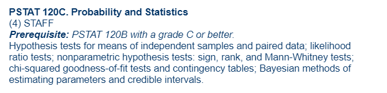

Exam MAS-I
The exam Modern Actuarial Statistics is administered by the CAS.
UCSB Course(s)
PSTAT 160B covers Poisson processes, discrete Markov chains
PSTAT 120B and PSTAT 120C cover most of the stats:
PSTAT 172A covers the life contingencies chapters:

CAS SYllabus
The CAS syllabus lists all the textbooks and chapters you have to study to ace this exam.